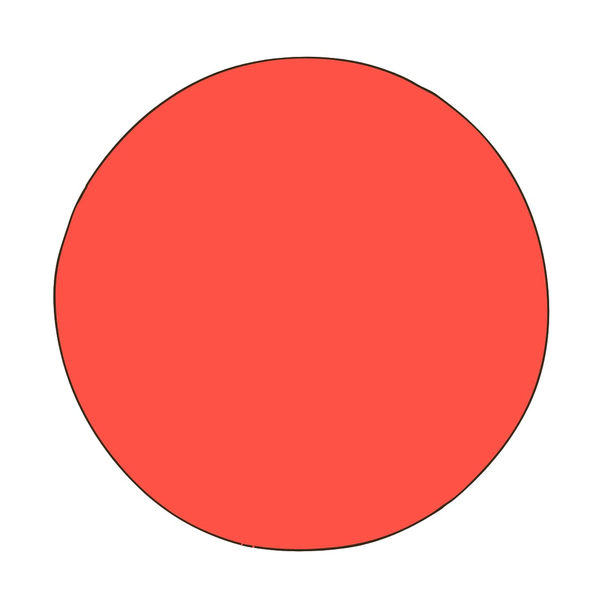
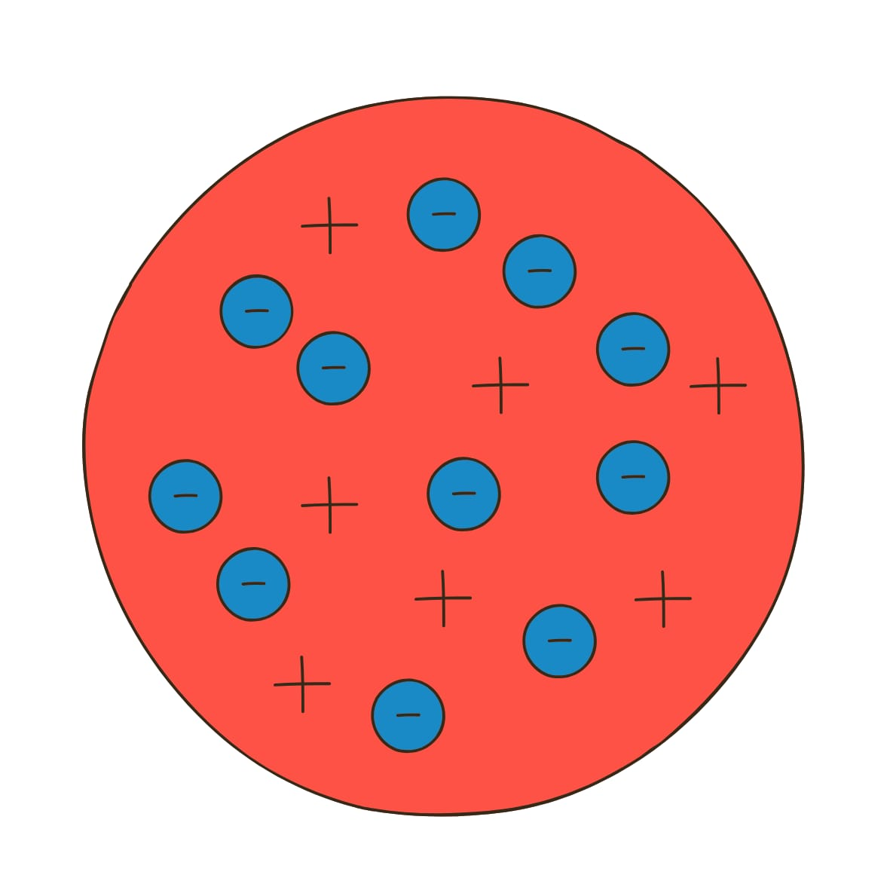
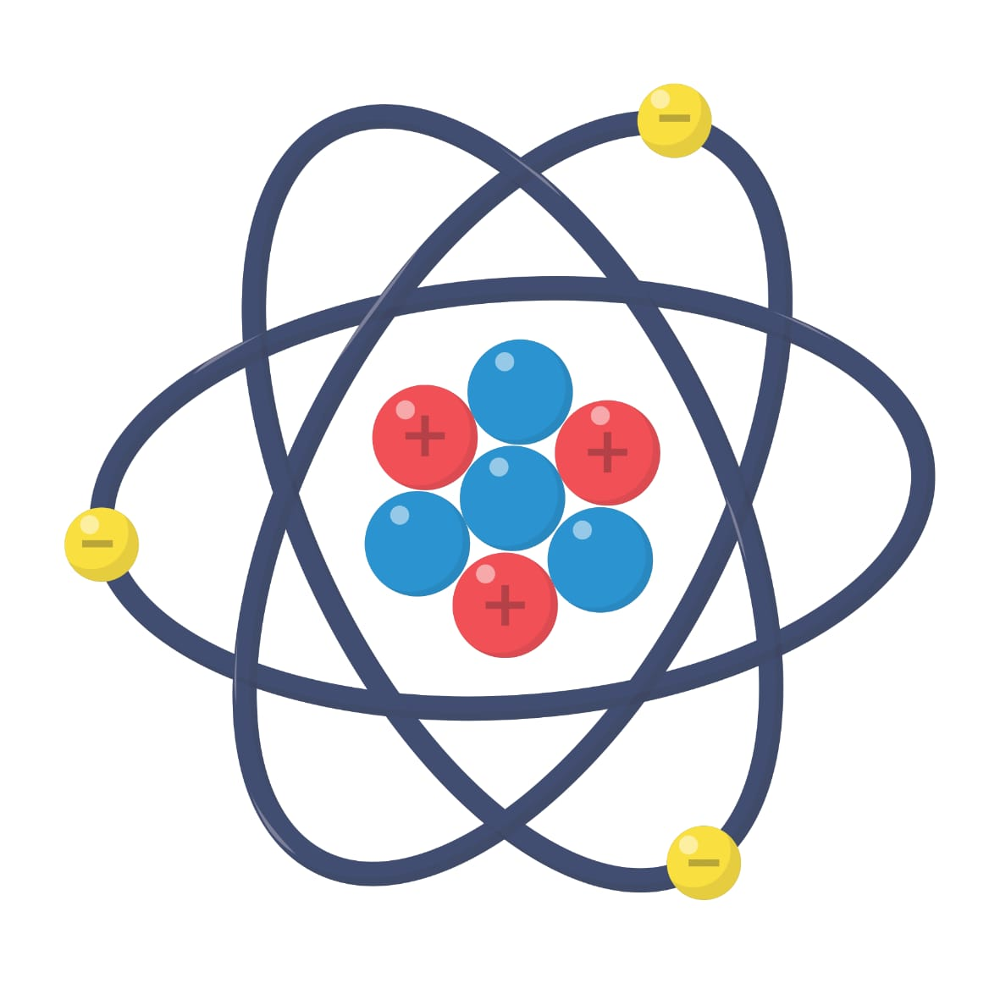
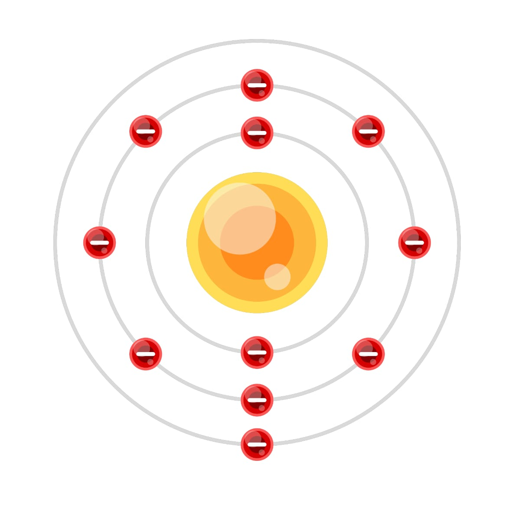
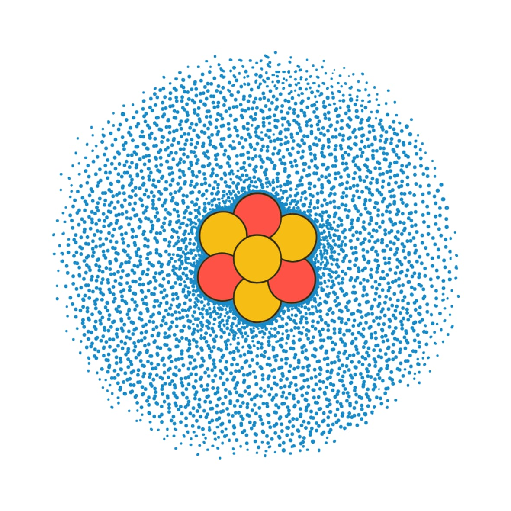

Daftar Isi
Perkembangan Model Atom
klik untuk menonton video
Model Atom Dalton (1803)

Tokoh: John Dalton
Teori atom Dalton menyatakan bahwa:
- Materi tersusun atas partikel sangat kecil yang disebut atom.
- Atom tidak dapat dibagi, diciptakan, atau dimusnahkan.
- Atom-atom dari unsur yang sama memiliki massa dan sifat yang sama.
- Atom dari unsur berbeda memiliki massa dan sifat berbeda.
- Senyawa terbentuk dari gabungan atom dengan perbandingan tertentu.
- Tidak dapat menjelaskan adanya partikel yang lebih kecil dari atom seperti elektron, proton, dan neutron.
Model Atom Thomson (1897)

Tokoh: J. J. Thomson
Thomson menemukan elektron melalui percobaan sinar katoda. Model atom Thomson dikenal sebagai model roti kismis (plum pudding):
- Atom berupa bola bermuatan positif.
- Elektron bermuatan negatif tersebar di dalamnya.
- Tidak dapat menjelaskan susunan muatan positif dan negatif secara tepat.
Model Atom Rutherford (1911)

Tokoh: Ernest Rutherford
Rutherford melakukan percobaan hamburan sinar alfa pada lempeng emas. Kesimpulan percobaan:
- Sebagian besar ruang atom adalah ruang kosong.
- Atom memiliki inti atom yang sangat kecil dan bermuatan positif.
- Elektron bergerak mengelilingi inti atom.
- Tidak dapat menjelaskan mengapa elektron tidak jatuh ke inti atom.
Model Atom Bohr (1913)

Tokoh: Niels Bohr
Bohr memperbaiki model Rutherford dengan konsep tingkat energi elektron. Teori Bohr:
- Elektron bergerak mengelilingi inti pada lintasan tertentu yang disebut kulit atom.
- Setiap lintasan memiliki energi tertentu.
- Elektron dapat berpindah lintasan dengan menyerap atau memancarkan energi.
- Hanya dapat menjelaskan atom hidrogen dengan baik.
- Tidak mampu menjelaskan atom dengan banyak elektron.
Model Atom Mekanika Kuantum (Modern)

Tokoh yang berperan antara lain:
- Erwin Schrödinger
- Werner Heisenberg
Ciri model atom modern:
- Elektron tidak bergerak pada lintasan pasti.
- Posisi elektron dinyatakan dalam orbital atau daerah kebolehjadian.
- Perilaku elektron dijelaskan dengan persamaan gelombang.
Model ini digunakan hingga sekarang dalam ilmu kimia dan fisika modern.
Kesimpulan
Perkembangan model atom menunjukkan bahwa ilmu pengetahuan selalu berkembang. Setiap teori atom baru muncul untuk memperbaiki kelemahan teori sebelumnya. Model atom modern saat ini menjelaskan bahwa elektron berada pada orbital dengan kemungkinan posisi tertentu di sekitar inti atom.
Ciri-ciri Model Atom
Model Atom Dalton
Model Atom Thomson
Model Atom Rutherford
Model Atom Bohr
Model Atom Modern (Mekanika Kuantum)